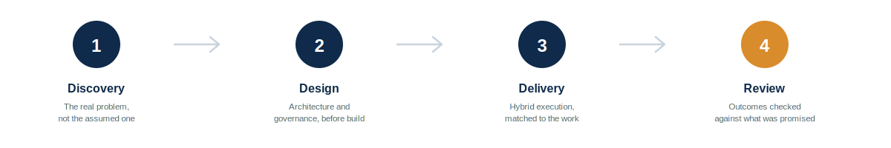

NextEmTech
Next Emerging Technology
Two tracks — consulting for organizations designing their AI and delivery architecture, and training for the people who'll run it.
Roadmaps that survive contact with a real organization.
Cloud and GenAI-ready architecture, governance built in from day one.
Low-code platforms, workflow automation, and engineering, built for speed, quality, and intelligent delivery.
CPMAI discipline applied to real AI initiatives.
Always with human-in-the-loop governance. Enterprise AI Agentic architecture, including AI Agents implementation.
Aligned with PMI's global CPMAI framework.
For project managers, program managers, PMO professionals, and technology leaders.
A practical prompt framework, not theory.
Decision rights, oversight structures, and explicit limits on what AI shouldn't decide alone.
The CPMAI-aligned discipline of validating the data your AI systems learn from.
A timestamped, reviewable record of every AI recommendation and human decision, ready for a regulator, board, or client.
Read more about our AI Governance & Audit Readiness practice →
The PMI-CPMAI™ certification is structured around five domains — this is what "CPMAI Advisory" and "CPMAI Certification Prep" are grounded in.
Privacy, transparency, bias mitigation, regulatory compliance, and audit trails — governance built in, not bolted on afterward.
Defining the right problem, feasibility, risk, scope, and ROI — before a single model gets built.
Sourcing, evaluating, and validating the data an AI system will actually learn from.
Algorithm selection, QA/QC, training oversight, and the go/no-go decisions that follow.
Deployment, governance, monitoring, and the transition to sustained, supported operations.
Based on PMI's official PMI-CPMAI™ Exam Content Outline (2025).
Four steps, every engagement — no surprises about what happens after you say yes.

Yes — engagements are delivered remotely and online, working with organizations across the region and globally.
Consulting covers strategy, architecture, and hands-on delivery for your organization. Training is certification prep and skill-building for your team — CPMAI, PM, and AI Fluency.
Yes — training is delivered in both Arabic and English.
Every engagement follows one principle: AI provides the analysis, the person owns the decision. AI supports judgment — it doesn't replace it.
Book a 30-minute call or send an email — see the Contact page for both options.
Whether it's a consulting engagement or a training session, let's start with a conversation.